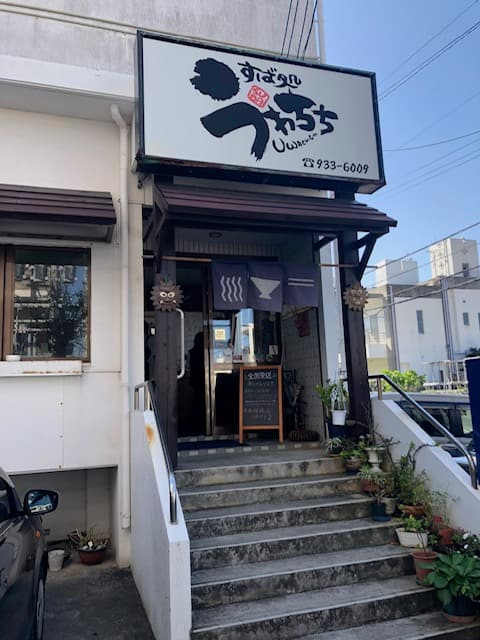
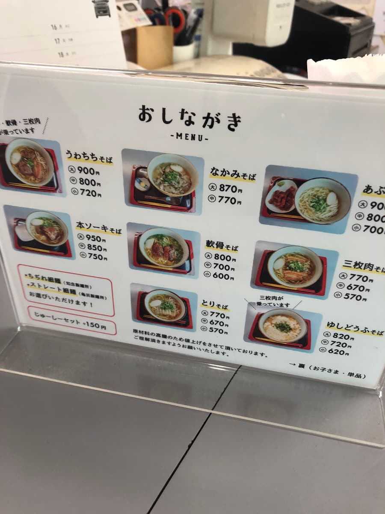
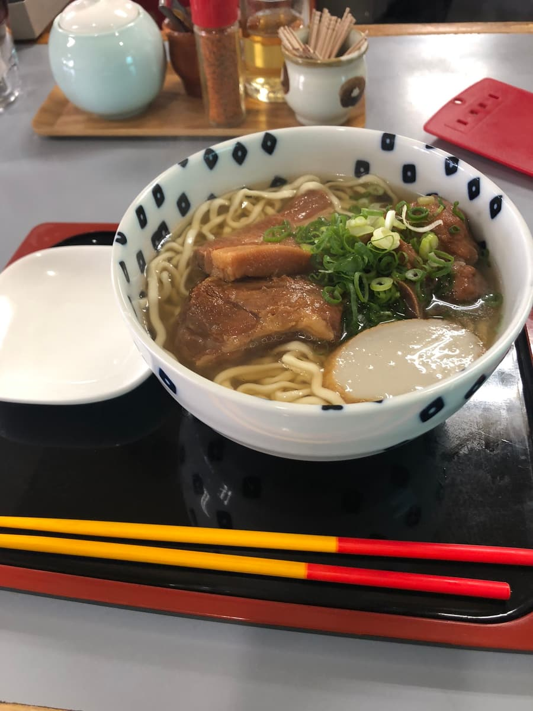
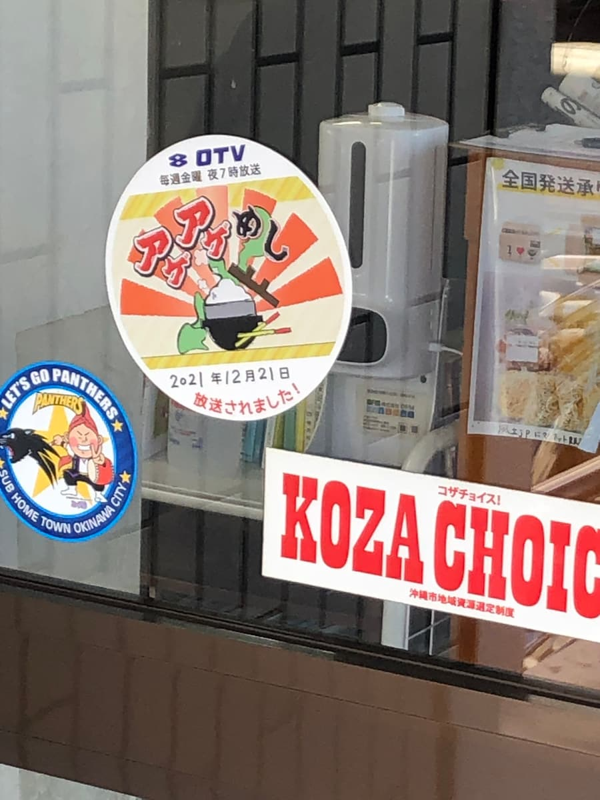

I ate here in January 2023 😄

I ordered the "Wachichi Soba", which shares the shop's name.


The stock, made from pork bone and bonito flakes, is apparently made with time and effort, carefully skimming the scum without leaving the pot for a moment so the broth doesn't turn cloudy.
First, a sip of the broth. The bonito stock comes across strongly. The noodles are a choose-your-own type, and I picked the commonly ordered "thin curly noodles".
The toppings are pork spare ribs (soki), braised pork belly (sanmai-niku) and soft-bone pork ribs (nankotsu soki), soaked with soy sauce flavor, tender and delicious 😋 I thought the location might be hard to find, but it seems to have been featured on local TV programs too, and it was bustling with customers 😄

Rating (9/15): Plain tasty.
Noodles: ★★★☆☆（3）
Soup: ★★★☆☆（3）
Toppings: ★★★☆☆（3）